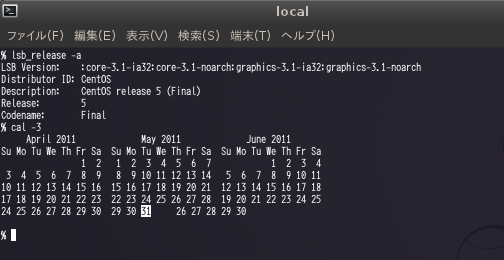
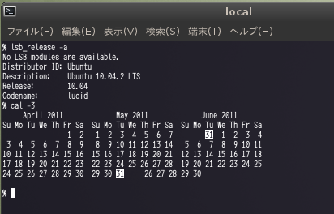

〜2011年5月下旬〜
今までは
RSS Icon In Awesombarを使っていたけど、
CSSでできるということなので
Firefox 4 - Feeds Icon in location barに乗り換え。
すごく便利なんだけど、なぜか予定を入れると2つ同じものが入ってしまう。
自分だけならちょっと我慢すればいいが、
出席依頼のメールも2通飛ぶのでそこだけOutlookを使うことに。
実に惜しい。
以前は http://twitter.com/home/?status=message という感じだったが、
今は http://twitter.com/?status=message じゃないと受けつけなくなったようだ。
またニコ用のbookmarkletを修正した。
まあ、replaceするだけなので。
Post Twitter Hack
この日記には貼りづらいのでHatena::Letに。
やはりGNOME 3が目玉だな。
RubyのバージョンじゃなくてRailsのバージョンしか書いてないんだけど、1.8.7なのか？
明日会社のマシンをアップグレードして確認せねば。
今回も Upgrading Fedora using yumに従って進める。
% sudo yum install rpmconf
% sudo rpmconf -a
% sudo rpm --import https://fedoraproject.org/static/069C8460.txt
% sudo yum update yum
% sudo yum clean all
% sudo yum --releasever=15 --disableplugin=presto distro-sync
Error: Package: libpanelappletmm-2.26.0-2.fc12.i686 (@rawhide/$releasever)
Requires: libpanel-applet-2.so.0
Removing: gnome-panel-libs-2.32.0.2-2.fc14.i686 (@fedora/14)
libpanel-applet-2.so.0
Updated By: gnome-panel-libs-3.0.0.1-4.fc15.i686 (updates)
Not found
You could try using --skip-broken to work around the problem
You could try running: rpm -Va --nofiles --nodigest
% sudo yum --releasever=15 --disableplugin=presto distro-sync --skip-broken
% sudo grub-install /dev/sda
% sudo reboot
さすがにスキップしちゃだめだった。カーネルが更新されてない。
gnome-panel-libsを消してやりなおして、とりあえずupgrade成功。
dovecotはchkconfigじゃなくてsystemdで管理されてる。
% sudo systemctl enable dovecot.service ln -s '/lib/systemd/system/dovecot.service' '/etc/systemd/system/multi-user.target.wants/dovecot.service' % sudo systemctl start dovecot.service
serviceも使えるが、内部的にsystemctlを呼んでるだけみたい。
% sudo service dovecot restart Restarting dovecot (via systemctl): [ OK ]
3日連続で失敗してる。失敗するとgrubのメニューになるわけで、何が原因なんだろう。
sshして他のマシンで作業するのが主なので破棄されてもそんなに害はないが、
セットアップするのが面倒だよなあ。
gnome-terminalの--save-configと--load-configをもうちょっと調べよう。
VirtualBoxへScientific Linux 6をインストールしてみた。
インストーラは同じみのanacondaなので、まあ問題なく進む。
Software Development Desktopを選択。
白青紺のなんだかよくわからないプログレスバーがなつかしい。
Fedoraだと2,3年前だったっけ？
再起動すると4.3GBもディスクを食ってた。
「Minimal」で「今すぐカスタマイズ」すべきだったか。
ついでにLiveCDで立ち上げるとデスクトップに"Install to Hard Drive"というアイコンがあるので、
これでインストール。ネットワークの設定はできないし、パッケージも選べない。
キーボードとメッセージの言語も別々に選べないので英語にせざるをえない状況。
CDのイメージを単にそのままコピーしてるようだ。
六本木の居酒屋でFizzBuzz Conferenceが開かれた。11名。京都からわざわざこのために来た人もいた。
FizzBuzz GolfのRuby版50Bを披露してもらうという会合。
56Bはif文を使ったものが巷にばらまかれているので55Bからの作品を発表。
このあたりは何人か到達しているので複数解が出てくるが、
すでに決まった形に落ち着いている。もうある部分だけ書けばいいような状況。
それが暗黙の了解と化している。つまりFizzBuzzは数学だった。
最終的に50Bの解が出たんだが、ものすごく予想外だった。まさに損して得取れを地で行く感じ。
ぐぐってみたら
ゴルフの常道だった!びっくりだよ。
それにしてもまた手書きで発表て。
関東甲信は一昨日梅雨入りした。5月の梅雨入りなんてあまり聞いたことない。
1951年以来2番目に早いとニュースで言ってた。
つまりもっと早い梅雨入りがあったわけで調べてみた。
気象庁に
過去の梅雨入りと梅雨明けというページあった。
関東甲信を見ると1963年は5月6日ごろとなってる。おれの生まれた年だった。
しかし、5月6日て。早すぎなんてもんじゃない。
よくそんな早い時期に思い切って宣言したもんだな。
ああ、後から修正されることもあるか。
だとすると今年も1週間ぐらい遡ってもおかしくないような。
4Bほど追い付けなかったが変遷。
55B:/i/{++a}/d/{a--||a=0}/s/{a*=a}a==256{a=0}/o/{print a+0}
54B:/i/{++a}/d/{!a||a--}/s/{a*=a}a==256{a=0}/o/{print a+0}
51B:/i/{++a}/d/{!a||--a}/s/{a*=a*(a!=16)}/o/{print a+0}
50B:{a+=/i/;a-=!!a*/d/}/s/{a*=a*(a!=16)}/o/{print a+0}
50B:{a+=/i/;!a||a-=/d/}/s/{a*=a*(a!=16)}/o/{print a+0}
49B:{a+=/i/;a-=a&&/d/}/s/{a*=a*(a!=16)}/o/{print a+0}
48B:{a+=/i/-(a&&/d/)}/s/{a*=a*(a!=16)}/o/{print a+0}
47B:{a+=/i/-!!a*/d/}/s/{a*=a*(a!=16)}/o/{print a+0}
46B:{a+=/i/-!!a*/d/}/s/{a*=a*(a!=16)}/o/&&""($0=a)
45B:{a+=/i/-!!a*/d/}/s/{a*=a*(a!=16)}/o/&&($0=a)_
44B:{a+=/i/-!!a*/d/}/s/{a*=a*(a!=16)}/o/,($0=a)_
43B:{a+=/i/-!!a*/d/}/s/{a*=a*(a!=16)}/o/,$0=a _
43B:{a+=/i/-!!a*/d/}/s/{a*=a*(a!=16)}/o/,$0=a""
sub(/o/,x=x*(x>0&&x-256)*x^/s/+/i/-/d/)
sub(/o/,...)はうまいなあ。
CentOS 5.5でcal -3してみたらなんか表示が変だった。
Ubuntu 10.04もまたかなり変だった。
エスケープシーケンス分バイト数を考慮してない感じ？
UbuntU 11.04やFedora 15は問題ない。
6/30も注意してみよう。

